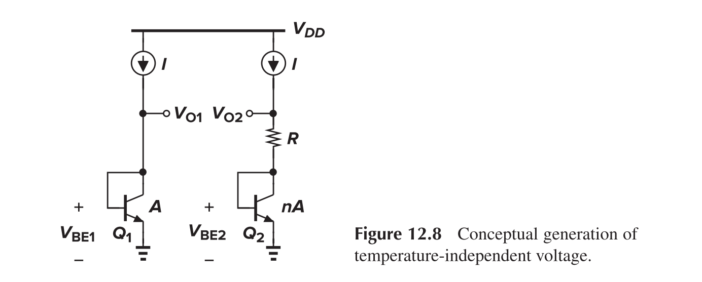

Current Mirror and Bandgap
This article intends to introduce the basic concepts of current mirrors and the bandgap reference.
Basic Current Mirrors
Shortcomings of voltage biasing:
- Sensitive to threshold voltage variation
- Temperature dependence
- Rely on the precision of $V_{DD}$
Use of current for biasing may eliminate those problems. Use of identical MOS operating in saturation may suffice.
Here we have
and thus
The transistor on the left generate $V_{GS}$ from $I_{REF}$ when and only when it is configured as a diode.
Note that:
- Mirror transistor should have the same length as the operating transistor to minimize mismatch.
- Mirror transistor should have the same width as the operating transistor to reduce errors caused by the poorly defined gate sides (Number of fingers and devices may be changed).
We can connect current mirrors in series as to modify the equivalent length of the transistor as follows:
Cascaded Current Mirror
If we consider channel-length modulation, the equations may be rewritten as
and thus
while $V_{DS1}=V_{GS1}=V_{GS2}$, $V_{DS1}$ may not equal to $V_{DS2}$. We may introduce the Cascode structure to shield the variation at node Y from that at node P
Approach 1
We need
and thus
We surmise that $V_b$ can be achieved by cascading two current sources, as in (c), as long as
or
Generally, we have
- $L_0=L_3$ to the lowest possible value to save area
- $W_3/W_0=W_2/W_1$ for $V_{GS0}=V_{GS3}$
- $L_1=L_2$ may be longer to reduce channel-length modulation and the flicker noise
The minimal allowable voltage at Node P is two overdrive voltage plus one threshold voltage.
Approach 2
In order to save voltage headroom, we may set $V_b$ to a lower value of
And therefore, we need to reduce $V_{DS1}$ to the value of $V_{DS2}$. A resistor is added to cause such a voltage drop
Definition of $V_b$ may be realized as in figure (c), where
A further modification can be made to address the PVT problem

Here, $V_b$ can be chosen to place M1 at the edge of saturation. Note that if $V_{GS0}=V_{GS3}$, then $V_{DS2}$ is forced to be equal to $V_{DS1}$. The range of $V_b$ can be determined as
Hence $V_{GS0}-V_{TH0}<V_{TH1}$, and M0 should be large enough. Two methods can be used to generate $V_b$
Active Current Mirror
We have
Supply-Independent Biasing
For (a)
and hence
Relatively long channels are used for all of the transistors in the circuit to avoid channel-length modulation. Another issue is the existence of "degenerate" bias point, where all transistors carry zero current.
The “start-up” problem can be resolved by adding a mechanism that drives the circuit out of the degenerate bias point when the supply is turned on. Diode M3, M5, and M1 in series from VDD to GND could effectively prevent off states.
Temperature-Independent References
Negative-TC Voltage
For a bipolar device
We may derive (assume for now that $I_C$ is held constant)
Temperature coefficient of $V_{BE}$ itself depends on the temperature, creating error in constant reference generation if the positive-TC quantity exhibits a constant temperature coefficient.
Positive-TC Voltage
If two bipolar transistors operate at unequal current densities, then the difference between their base-emitter voltages is directly proportional to the absolute temperature.
Bandgap Reference
Since at room temperature, $\partial V_{BE}/\partial T\approx−1.5\text{ mV/K}$ whereas $\partial V_{T}/\partial T\approx+0.087\text{ mV/K}$, hence $V_{REF}\approx V_{BE}+17.2V_T\approx1.25\text{ V}$.we can add the two as follows

If we guarantee that $V_{O1}=V_{O2}$, then $RI=V_{BE1}-V_{BE2}=V_T\ln n$, and then $V_{O2}=V_{BE2}+V_T\ln n$. Yet, since $V_{O2}=V_{O1}\approx800\text{ mV}<1.25\text{ V}$, it cannot work as expected.
- The op-amp ensures that $V_X=V_Y$
- $R_1=R_2$ and $V_X=V_Y$ ensures that $I_1=I_2$
- $V_Y$ is amplified before being added to $V_{BE2}$, hence voltage difference of $V_Y$ and $V_{O2}$ can be small
- Post link: https://triblemany.github.io/archives/eff29f15/current-mirror-and-bandgap.html
- Copyright Notice: All articles in this blog are licensed under BY-NC-SA unless stating additionally.